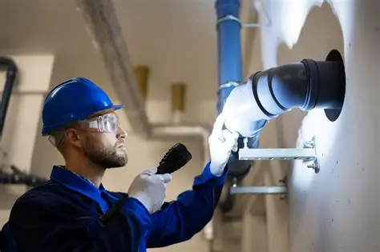

Tankless Water Heaters:
These units heat water on demand, improving energy efficiency compared to traditional water heaters that store and heat large amounts of water
Trenchless Pipe Repair:
This technique uses small access points instead of extensive trenches, reducing property damage and ideal for urban environments.

Advanced Leak Detection:
Infrared cameras and acoustic sensors help plumbers pinpoint leaks behind walls or underground, saving time and cost on repairs

Smart Plumbing Systems:
These units heat water on demand, improving energy efficiency compared to traditional water heaters that store and heat large amounts of water